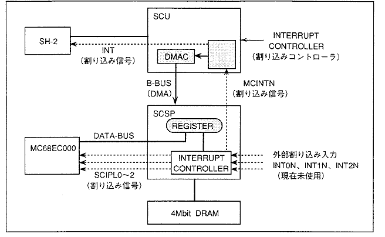
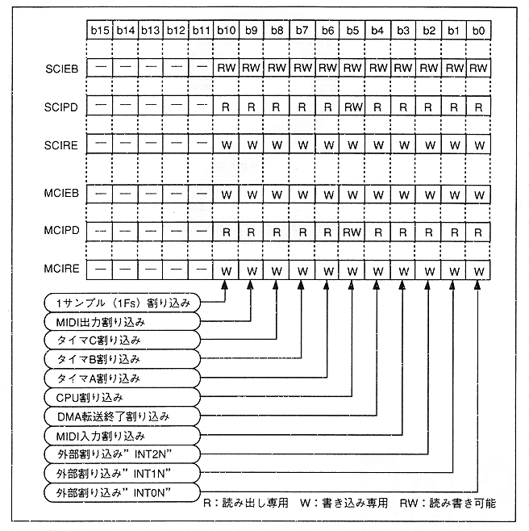
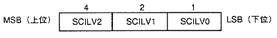
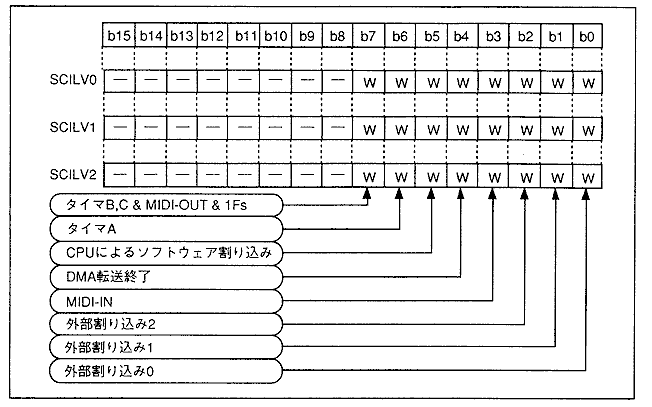

★HARDWARE Manual
★SCSPユーザーズマニュアル
★HARDWARE Manual
★SCSPユーザーズマニュアル
図4.55 サウンド割り込み信号接続図

図4.56 割り込みレジスタのビット対応

| ビット | 割り込み要因 |
| 0 | 外部割り込み入力"INT0N"の割り込み入力に対応 |
| 1 | 外部割り込み入力"INT1N"の割り込み入力に対応 |
| 2 | 外部割り込み入力"INT2N"の割り込み入力に対応 |
| 3 | MIDI入力割り込みに対応 MIDI-IN側のFIFOバッファメモリが空の状態からデータを取り込んだ時に割り込みを発生します。 FIFOバッファからデータをすべて読み取り、バッファが空き状態になると、自動的に解除されます。 |
| 4 | DMA転送終了割り込みに対応 SCSP内蔵DMAを使用したDMA転送が終了した時("DLG"で設定したブロック(長さ(量))のデータ転送がすべて終了した時)に割り込みを発生させます。 |
| 5 | CPUマニュアル割り込みに対応 CPU(メインおよびサウンド)の書き込みによる、サウンドCPUへの割り込み、またはメインへの割り込みを行なうことができます。"1B"を書き込むと割り込みがかかります("0B"は無効です)。 |
| 6 | タイマA割り込みに対応 |
| 7 | タイマB割り込みに対応 |
| 8 | タイマC割り込みに対応 |
| 9 | MIDI出力割り込みに対応 MIDI-OUT側のFIFOバッファのメモリが空状態に時に、割り込み要求を発生します。 MIDI-OUTバッファメモリ(レジスタ)にデータを書き込んで、空き状態でなくなった時、割り込みは自動的に解除されます。 |
| 10 | 1サンプルごとの割り込みに対応します(1サンプル=22.68μsec=1/44.1Kの時間間隔)。 |
| 11〜15 | 無効 |
図4.57 3ビットコードとレジスタの対応

図4.58 割り込みレベル設定レジスタフォーマット

★HARDWARE Manual
★SCSPユーザーズマニュアル